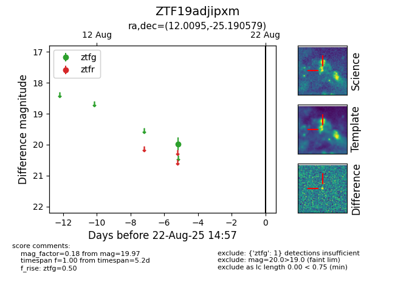

Target ZTF19adjipxm at 2025-08-22 15:31, see:
FINK: fink-portal.org/ZTF19adjipxm
Lasair: lasair-ztf.lsst.ac.uk/objects/ZTF19adjipxm
ALeRCE: alerce.online/object/ZTF19adjipxm
alt names
ZTF19adjipxm (ztf,alerce)
coordinates:
equatorial (ra, dec) = (12.0095,-25.19058)
galactic (l, b) = (101.2516,-87.91756)
photometry
last ztfg=19.97
1 ztfg detections
